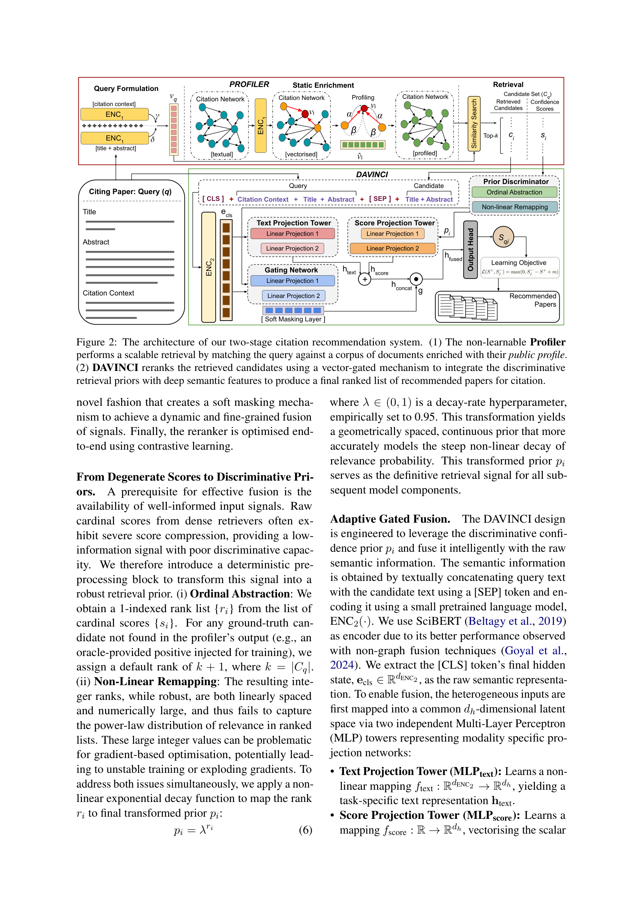
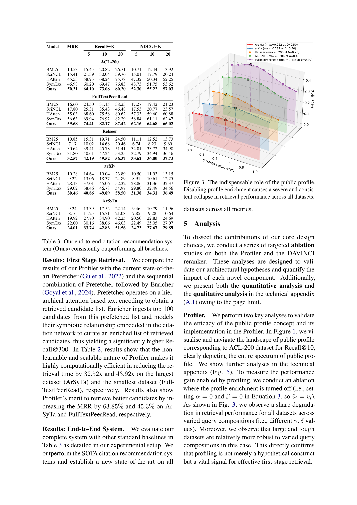

Figure 1
저자: Karan Goyal, Dikshant Kukreja, Vikram Goyal, Mukesh Mohania | 날짜: 2026-03-18 | DOI: 10.48550/arXiv.2603.17361
Figure 1
본 연구는 local citation recommendation(LCR) 시스템의 성능을 개선하기 위해 Profiler라는 경량 비학습(non-learnable) 모듈과 DAVINCI라는 새로운 reranking 모델을 제안한다. 기존 시스템의 confirmation bias 문제와 높은 계산 비용을 해결하면서, 실제 환경을 반영한 inductive evaluation setting을 도입하여 state-of-the-art 성능을 달성하였다.

Figure 2
과학 문헌의 폭발적 증가로 관련 선행 연구를 식별하고 인용하는 작업이 점점 어려워지고 있다. 기존 LCR 시스템(SymTax 등)은 인간의 인용 패턴을 모방하는 enricher를 사용하지만, 이는 confirmation bias를 영속화하고 계산 비용이 높으며 특정 메타데이터(taxonomy)에 의존하는 한계가 있다. CiteBART 같은 생성 기반 접근법은 존재하지 않는 인용을 환각(hallucinate)하는 문제가 있다.

Figure 3

Figure 4

Figure 5
논문의 "public profile"이라는 개념을 citation recommendation에 도입한 점이 독창적이다. 비학습 모듈로 bias-free한 candidate retrieval을 달성하고, 기존의 transductive evaluation의 한계를 지적하며 inductive evaluation을 최초로 제안한 것은 분야에 대한 중요한 방법론적 기여이다.
총평: Citation recommendation의 실용적 한계를 잘 파악하고, bias-free retrieval과 현실적 evaluation이라는 두 가지 중요한 문제를 동시에 해결한 체계적인 연구이다.